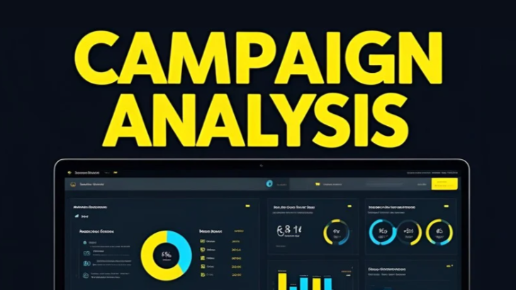
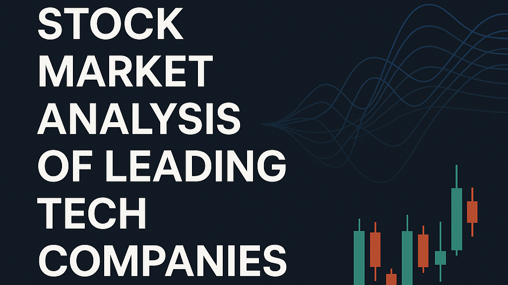
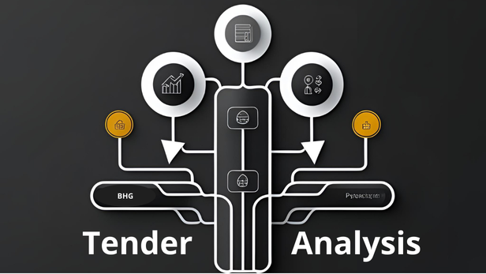

¡Hola, soy Braulio Herrera! Hi, I'm Braulio Herrera!
Analista de Datos - Dirección de Empresas Data Analyst - Business Management
Aplico pensamiento analítico y visión estratégica para transformar datos en decisiones que impulsan resultados reales en los negocios I apply analytical thinking and strategic vision to turn data into decisions that drive real business results.
Experiencia Laboral Work Experience
Analista de Datos Data Analyst
Freelance
Costa Rica Costa Rica
Octubre 2024 - 2025 October 2024 - 2025
Actual CurrentBrindo servicios freelance de análisis de datos orientados a mejorar la eficiencia operativa y apoyar la toma de decisiones estratégicas. He ayudado a organizaciones a aumentar su productividad hasta en un 20% mediante paneles interactivos y reportes detallados, adaptados a sus necesidades específicas. Cuento con una sólida capacidad analítica, experiencia en la detección de patrones y tendencias, que me permiten generar recomendaciones accionables basadas en datos. I provide freelance data analysis services focused on improving operational efficiency and supporting strategic decision-making. I have helped organizations increase productivity by up to 20% through interactive dashboards and detailed reports tailored to their specific needs. I bring strong analytical skills, experience in identifying trends and patterns, and market analysis expertise to deliver actionable, data-driven insights.
- Diseñé y desarrollé dashboards interactivos en Power BI para el monitoreo en tiempo real de KPIs. Designed and developed interactive dashboards in Power BI for real-time KPI monitoring.
- Automaticé la actualización de informes y visualizaciones mediante SQL y Power BI. Automated report and visualization updates using SQL and Power BI.
- Realicé análisis predictivos y estudios de tendencias para apoyar la planificación estratégica. Performed predictive analytics and trend analysis to support strategic planning.
- Desarrollé análisis de mercado enfocados en detectar oportunidades y optimizar decisiones comerciales. Conducted market analysis to identify opportunities and support business optimization.
Analista de Datos Junior Junior Data Analyst
Paragon One
EEUU - Remoto EEUU - Remote
Feb 2023 - Agos 2024 Feb 2023 - Aug 2024
Pasantía internshipColaboré en la limpieza y preparación de grandes volúmenes de datos de usuarios para respaldar decisiones del equipo de producto. Participé en el diseño y análisis de experimentos A/B, contribuyendo a la optimización de la experiencia del usuario mediante insights accionables. Collaborated on cleaning and preparing large volumes of user data to support product team decisions. Contributed to the design and analysis of A/B experiments, generating actionable insights to enhance user experience.
- Limpieza y transformación de datos usando Pandas en Python. Cleaned and transformed data using Pandas in Python.
- Creación de reportes semanales sobre el rendimiento de la plataforma. Created weekly reports on platform performance.
- Soporte en la implementación de bases de datos SQL para el almacenamiento de datos (Migraciones de Excel a SQL). Supported the implementation of SQL databases for data storage (Excel to SQL Migrations).
Mis Proyectos My Projects

Análisis de Campañas de Marketing Marketing Campaign Analysis
Diseñé y ejecuté un proyecto de análisis de mercado orientado a mejorar la segmentación de clientes y optimizar el ROI de campañas de marketing. I designed and executed a market analysis project aimed at improving customer segmentation and optimizing the ROI of marketing campaigns.

Análisis de cotizaciones en Bolsa Empresas tecnológicas Analysis of Stock Market Quotes for Tech Companies
Análisis financiero de las principales empresas tecnológicas del mercado bursátil durante el período 2023–2025, con el objetivo de identificar patrones de rendimiento, correlaciones y proyecciones de comportamiento futuro. Financial analysis of leading tech companies in the stock market during the 2023–2025 period, aiming to identify performance patterns, correlations, and future behavior projections.

Análisis Estratégico en Licitaciones Competitivas Strategic Decision Analysis in Competitive Bidding
Desarrollé un modelo de decisión basado en árboles de probabilidad y análisis de sensibilidad para evaluar estrategias de oferta en un proceso de licitación. Con el objetivo de identificar la alternativa más rentable y consistente. I developed a decision model using probability trees and sensitivity analysis to evaluate bidding strategies in a tender process. The project identified the most profitable and consistent alternative.
Optimización de Rendimiento PostgreSQL PostgreSQL Performance Optimization
Práctica de consultas avanzadas en SQL combinada con el uso de IA generativa (LLM) para experimentar técnicas de optimización, evaluación de índices y análisis automatizado de consultas. Practice of advanced SQL queries combined with generative AI (LLM) to experiment with optimization techniques, index evaluation, and automated query analysis.
Sobre Mí About Me
"Mi formación marcó el inicio de una carrera enfocada en análisis y mejora continua."
Soy un analista de datos con formación en Dirección de empresas con experiencia en proyectos que integran áreas como marketing, finanzas, operaciones y talento humano. Mi enfoque está en traducir datos complejos en soluciones accionables que aporten valor estratégico y mejoren la toma de decisiones. I am a data analyst with a background in Business Management, experienced in projects integrating areas such as marketing, finance, operations, and human talent. My focus is on translating complex data into actionable solutions that provide strategic value and improve decision-making.
He desarrollado dashboards interactivos, modelos predictivos y automatizaciones en herramientas como Python (Pandas, NumPy, Scikit-learn, Matplotlib), SQL, Power BI y Looker Studio. También cuento con formación en Lean Six Sigma, lo que refuerza mi capacidad para optimizar procesos y orientar los análisis a resultados medibles. I have developed interactive dashboards, predictive models, and automations using tools such as Python (Pandas, NumPy, Scikit-learn, Matplotlib), SQL, Power BI, and Looker Studio. I also have training in Lean Six Sigma, which enhances my ability to optimize processes and orient analyses towards measurable results.
Me apasiona aplicar el análisis de datos para resolver problemas reales y generar impacto estratégico. I am passionate about applying data analysis to solve real problems and generate strategic impact.
Formación Académica Academic Background
Licenciatura en Dirección de Empresas Licenciate Degree in Business Management
Universidad de Costa Rica University of Costa Rica
Actualmente Currently Enrolled
Bachillerato en Dirección de Empresas Bachelor's Degree in Business Management
Universidad de Costa Rica University of Costa Rica
2024 2024
Cursos y Certificaciones Courses & Certifications
IBM Data Analyst Professional Certificate
IBM - 2025
Dominio en análisis y visualización de datos con Python, SQL, Excel, Cognos y Looker Studio. Incluye limpieza, modelado, presentación de datos y el uso de herramientas de Machine Learning para análisis predictivo. Mastery of data analysis and visualization using Python, SQL, Excel, Cognos, and Looker Studio. Includes data cleaning, modeling, presentation, and the use of Machine Learning tools for predictive analysis.
Power BI Specialist
Cámara de Comercio Exterior - 2024
Enfoque práctico en la creación de informes dinámicos, modelos de datos, dashboards interactivos y métricas personalizadas con Power BI en contextos empresariales. Practical training focused on building dynamic reports, data models, interactive dashboards, and custom metrics with Power BI in business scenarios.
Green Belt Lean Six Sigma
OPEX Mentor - 2023
Formación en metodologías Lean Six Sigma para la mejora de procesos, reducción de defectos y aumento de eficiencia, aplicando herramientas como DMAIC y análisis de causa raíz. Certified training in Lean Six Sigma methodologies for process improvement, defect reduction, and efficiency optimization, applying tools such as DMAIC and root cause analysis
Databases and SQL for Data Science with Python
IBM - 2024
Uso avanzado de SQL para consultas, gestión de bases de datos y su integración con Python para análisis de datos y automatización de tareas. Specialized training in advanced SQL for querying and managing databases, integrated with Python for data analysis and task automation.
Data Visualization and Dashboards with Excel and Cognos
IBM - 2025
Desarrollo de visualizaciones efectivas y paneles interactivos utilizando Excel y Cognos Analytics para apoyar la toma de decisiones basada en datos. Hands-on experience designing effective visualizations and interactive dashboards using Excel and Cognos Analytics to support data-driven decision-making.
Python for Data Science, AI & Development
IBM - 2025
Certificado en Python aplicado a ciencia de datos, inteligencia artificial y desarrollo de soluciones. Incluye manejo de datos, programación y uso de librerías clave. Certificate in Python for data science, artificial intelligence, and application development. Covers data handling, programming fundamentals, and essential libraries.
Mis Habilidades My Skills
Análisis de Datos Data Analysis
Extraigo y analizo datos para generar insights que apoyen la toma de decisiones estratégicas y basadas en evidencia. I extract and analyze data to generate insights that support strategic and evidence-based decision-making.
Visualización de Datos Data Visualization
Diseño dashboards interactivos y visualizaciones que comunican tendencias, anomalías y el rendimiento de KPIs. I design interactive dashboards and visualizations that communicate trends, anomalies, and KPI performance.
Análisis de Negocio Business Analysis
Identifico oportunidades y cuellos de botella a través del análisis de datos enfocado en KPIs clave e indicadores estratégicos. I identify opportunities and bottlenecks through data analysis focused on key KPIs and strategic indicators.
Machine Learning Machine Learning
Desarrollo modelos predictivos para clasificar, segmentar o anticipar comportamientos que optimizan procesos de negocio. I develop predictive models to classify, segment, or anticipate behaviors that optimize business processes.
Limpieza de Datos Data Cleaning
Limpio, transformo y preparo datos para asegurar que estén listos para el análisis y sean confiables para la toma de decisiones. I clean, transform, and prepare data to ensure it's ready for analysis and reliable for decision-making.
Análisis Financiero Financial Analysis
Evalúo el rendimiento utilizando ratios financieros clave, proyecciones y análisis de sensibilidad basados en datos. I evaluate performance using key financial ratios, projections, and data-driven sensitivity analysis.
Gestión de Proyectos de Datos Data Project Management
Coordino proyectos de principio a fin, enfocados en resultados accionables y alineados con los objetivos de negocio. I coordinate projects from start to finish, focused on actionable results and aligned with business objectives.
Automatización con Python Python Automation
Automatizo flujos de trabajo de análisis, informes y actualizaciones de datos para aumentar la eficiencia operativa. I automate analysis workflows, reports, and data updates to increase operational efficiency.
Contacto Contact
¿Interesado en colaborar o tienes alguna pregunta? No dudes en contactarme. Interested in collaborating or have a question? Feel free to contact me.